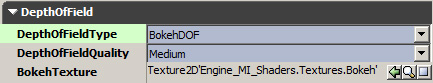
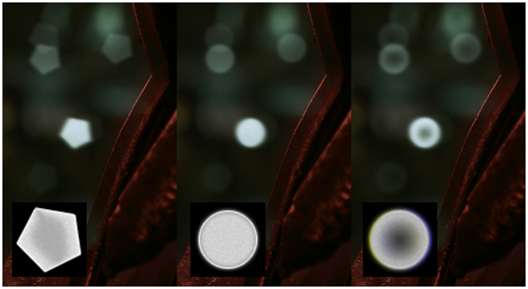
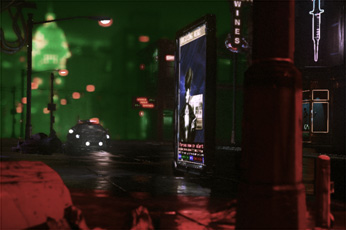

UDN
Search public documentation:
BokehDepthOfFieldCH
English Translation
日本語訳
한국어
Interested in the Unreal Engine?
Visit the Unreal Technology site.
Looking for jobs and company info?
Check out the Epic games site.
Questions about support via UDN?
Contact the UDN Staff
日本語訳
한국어
Interested in the Unreal Engine?
Visit the Unreal Technology site.
Looking for jobs and company info?
Check out the Epic games site.
Questions about support via UDN?
Contact the UDN Staff
散景景深
概述
 这个实时渲染的图像所描画的焦内的对象是清晰，焦外的对象是模糊的。Bokeh形状模拟5叶片镜头光圈。
这个实时渲染的图像所描画的焦内的对象是清晰，焦外的对象是模糊的。Bokeh形状模拟5叶片镜头光圈。
激活Bokeh景深

请确保将 Type (类型) 设置为 "BokehDOF"。Quality(质量) 允许您在质量和性能之间进行权衡，但是效果较小。理想情况下，该设置为Low(低级)，仅当有明显效果差异并性能足够好时才提高质量。
BokehTexture 可以是任何2D贴图，但是理想情况下它应该：
- 是灰度图 (正确的颜色边纹是依赖于屏幕位置的，但是添加颜色变换到图像上可以使其看起来像颜色边纹)。 *不大于128 x 128 (过大则浪费内存)。
- 有黑边 (较大的方块渲染较大的贴图，通过双线性过滤Bokeh形状将具有抗锯齿效果)。
- 是未压缩的或有亮度的。
- 具有适当的亮度 (参照样本)。
Bokeh形状

半透明
 另外，有一个新的材质节点 "DepthOfFieldFunction"，它使您可以调整着色(比如，淡出或混合到一种模糊状态)：
另外，有一个新的材质节点 "DepthOfFieldFunction"，它使您可以调整着色(比如，淡出或混合到一种模糊状态)：

已知限制(低级细节)
- 因为该技术使用分辨率为原来一半的图像作为源，所以渗透到错误层中的明亮像素会有较小的失真。
- 该特效可以和全屏抗锯齿(MSAA)协同工作，但是像素中非常亮的部分可能会渗透到错误的层中。可以通过在uberpostprocesseffect MSAA中提高采样来避免这个问题。 。
- 没有处理多个层之间的遮挡。这会导致较小的颜色渗透。
- 所有的焦外模糊效果都不会受到运动模糊的影响 (这意味着或者丢失运动模糊或者丢失 MotionBlurSoftEdge将会柔和其边缘的清晰轮廓)。
优化(低级细节)
